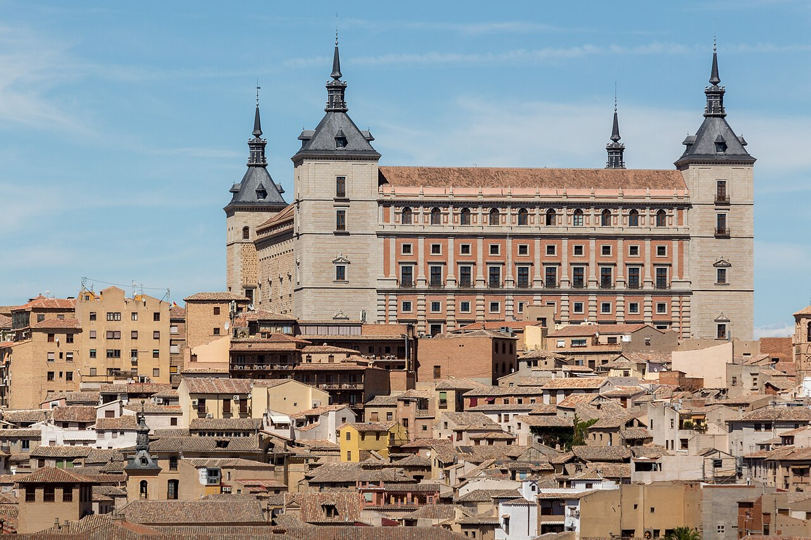

5 Planes en Toledo de Noche y en Pareja: Callejones Medievales, Baños Árabes y Leyendas (A 33 min de Madrid)
A las 19:00 horas ocurre un pequeño milagro en Toledo: los grupos de excursionistas vuelven a Madrid y el casco histórico medieval se queda en silencio bajo los faroles de forja.

1. La Ruta de los Cobertizos a la luz de los faroles (Coste: 0 €)
Los cobertizos son pasadizos elevados que unían los palacios y conventos en el siglo XVI. Pasear por el Cobertizo de Santa Clara o Santo Domingo el Real a las 20:30 en silencio absoluto es como viajar a 1580.
2. Baños Árabes subterráneos bajo bóvedas del siglo XII
Ubicados sobre restos originales islámicos y mudéjares, sus piscinas de agua caliente, templada y fría bajo arcos de ladrillo iluminados con velas son el plan en pareja más especial de Castilla-La Mancha.
3. El Mirador del Valle y la Senda Ecológica del Tajo al anochecer (Coste: 0 €)
Ver encenderse la iluminación artística del Alcázar, la Catedral Primada y el Monasterio de San Juan de los Reyes reflejados en el cañón del río Tajo mientras caminas por la pasarela de madera junto al agua es inolvidable.
4. El Puente de San Martín iluminado y tapeo de caza en la Judería Mayor
Cruza al anochecer los torreones almenados del siglo XIV del Puente de San Martín y sube por la Judería para probar unas carcamusas calientes o tapas de venado en los patios toledanos tradicionales.

5. Ruta nocturna por las mazmorras, termas romanas y pozos subterráneos
Debajo de las casas de Toledo existe una segunda ciudad excavada en la roca: aljibes islámicos, bóvedas romanas del siglo I y antiguos calabozos que por la tarde-noche cobran una atmósfera única.
Preguntas frecuentes
¿Cómo ir de Madrid a Toledo rápido para una escapada?
El tren Avant desde Madrid Puerta de Atocha tarda exactamente 33 minutos y el último tren de vuelta sale pasadas las 21:30 h, lo que permite cenar y ver Toledo iluminado de noche.